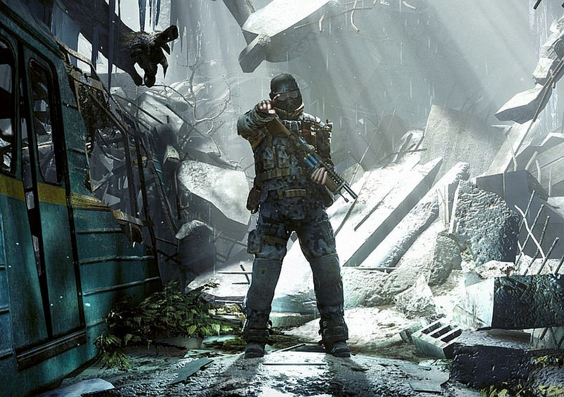

4A Games Limited is a Ukrainian video game developer based in Sliema, Malta. The company was founded in Kiev, Ukraine in 2005, and moved its headquarters to Malta in 2014, with the Kiev office resuming work as sub-studio, but retaining the majority of the staff. 4A Games is best known for developing the Metro video game franchise. The company's first game was Metro 2033, an adaptation of the novel of the same name by Russian author Dmitry Glukhovsky.
Overview
The team is put together of many young professionals who have shown a lot of integrity and skill when it comes to game and software development, both in the past and also in the present, shown when developing their first title Metro 2033, based on Dmitry Glukhovsky's novel with the same name.
Metro series developer 4A Games has had a rough time of it. It weathered tough conditions in the Ukraine and the loss of publisher THQ, managing to release two critically-acclaimed and genuinely interesting games – Metro 2033 and Metro: Last Light – despite the turmoil.
On 12 May 2014, amidst the Ukrainian crisis and following the annexation of Crimea by the Russian Federation, 4A Games announced that they were to expand by opening a new studio in and moving their headquarters to Sliema, Malta to allow for easier operations inside the European Union, with the Kiev studio continuing to operate for Eastern European operations.

2010 Metro 2033 2013 Metro: Last Light 2014 Metro 2033 Redux 2014 Metro: Last Light Redux 2017 Arktika.1 2018 Metro Exodus